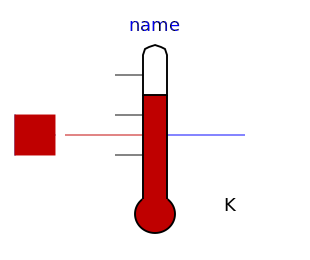
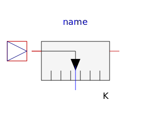
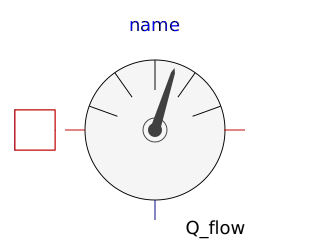
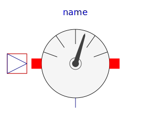

| Name | Description |
|---|---|
|  TemperatureSensor | Absolute temperature sensor in Kelvin |
|  RelTemperatureSensor | Relative Temperature sensor |
|  HeatFlowSensor | Heat flow rate sensor |
|  ConditionalFixedHeatFlowSensor | HeatFlowSensor, conditional fixed Temperature |